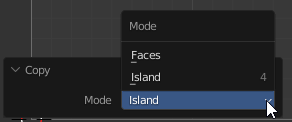
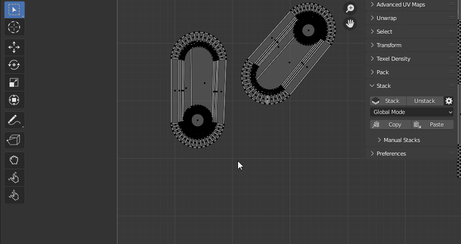
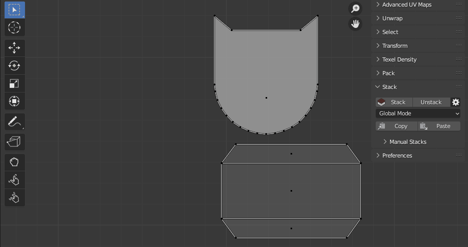

Copy / Paste (Stacks)
Allows you to transfer the parameters from one island to another.
Copy
- Copy parameters of selected Islands/Faces and save them.
Copy Operator Options

- Island - Copy and save parameters from the selected island.
- Faces - Copy and save parameters from the selected faces.
Paste
- Paste the parameters saved earlier by Copy to selected Islands/Faces.
Paste Operator Options

-
Type - Which selection type needs to be processing.
- Island - Paste parameters to the selected island.
- Faces - Paste parameters to the selected faces.
-
Mode -
Stacking Options:

- Stack Offset - Use the Stack Offset option. Learn More in this article: Stack
- Area Matching - Set strict requirements for Islands Area Matching when Stacking. Disable this option if the Islands have a slightly different Area.
Transfer Options:

- Stack Offset - Use the Stack Offset option. Learn More in this article: Stack
- Position - Allow transfer position.
- Size - Allow transfer size.
- Nothing - Do not perform the size transferring.
- Size (Fit Islands) - Transfer the size.
- Keep Proportion - Keep the proportion of the selected island.
- Horizontally / Vertically - Which direction needs to be matched.
- Texel Density - Transfer the Texel Density.
Usage Samples.
Paste: Mode - Stack.

Paste: Mode - Transfer - Position.

Paste: Mode - Transfer - Size - Fit.